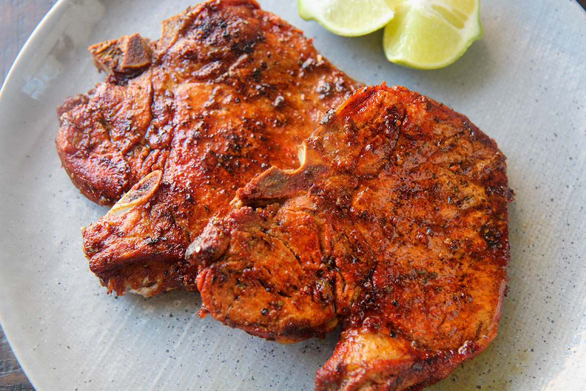

Fried Pork Chops

Description
A filling protein dish with a flavorful Puerto Rican style marinade. Using bone-in pork will ensure the right juiciness and flavor. Use center-cut chops for a nice amount of marbling. Goes great with rice.
Ingredients
- 1 lb bone-in pork chop
- 2 tbsp sofrito
- 2 tbsp white vinegar
- 1 tbsp olive oil
- 1 tsp adobo seasoning
- 1 tsp dried oregano
- 1/4 tsp salt
- 1/4 tsp black pepper
- 1/4 tsp garlic powder
- 1/2 packet of sazón with achiote/annatto
Steps
- Dry pork chops and place in plastic bag.
- Add sofrito, white vinegar, olive oil, adobo, dried oregano, salt, black pepper, and garlic powder to plastic bag.
- Massage marinade into pork for a couple of minutes.
- Seal bag and put in refrigerator for no more than 3 hours.
- Add olive oil to skillet on medium-high heat.
- Place pork chops in center of skillet and let cook for 5 minutes on each side (or until 145°F internal temperature).
- Let pork chops rest off heat for 10 minutes.